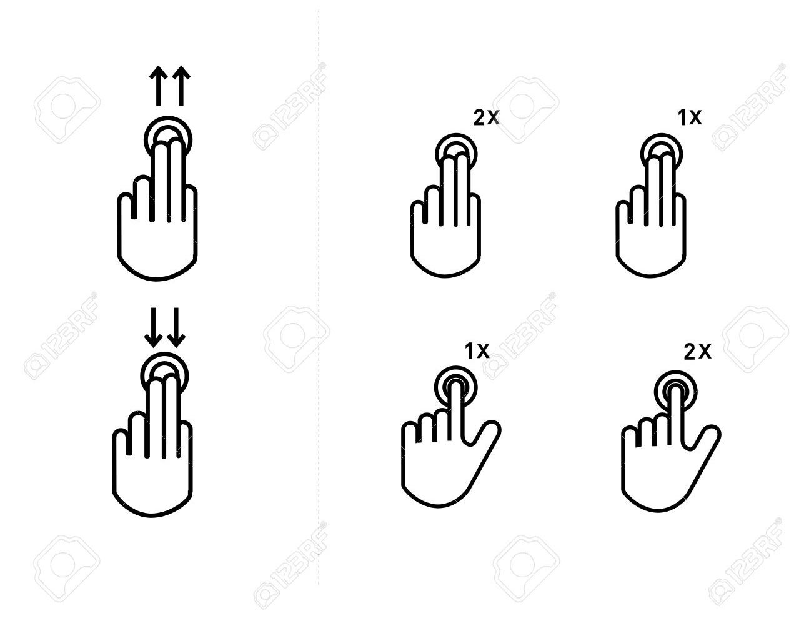
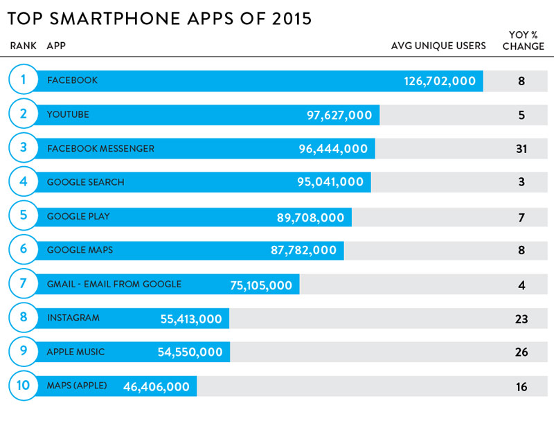

EXPLORE SCROLLBARS
A scrollbar is an interaction technique or widget in which continuous text, pictures,
or any other content can be scrolled in a predetermined direction.

H O W
M U C H
D O
Y O U
T H I N K
Y O U
S C R O L L
O N
A
D A I L Y
B A S I S
?
PEOPLE
SPEND
90 MINUTES
A DAY
IN AVERAGE
ON THEIR
SMARTPHONES
ON WHAT WEBSITE / APPS?

MOSTLY
IN SCROLLABLE
WEBSITES
OR
APPS

FOR EVERY
5 SECONDS
OF PHONE USAGE
THE PERSON SROLLS
30cm
ON AVERAGE
IF WE CALCULATE
90 MINUTES/DAY
X
30/5 CM/SEC
=
324 m
THAT IS
HOW MUCH
WE SCROLL
PER DAY
YOU JUST SCROLLED APPROXIMATELY 4.10 m
LEARN
SIMPLE TIMELINE OF
SCROLLBAR DEVELOPMENTS